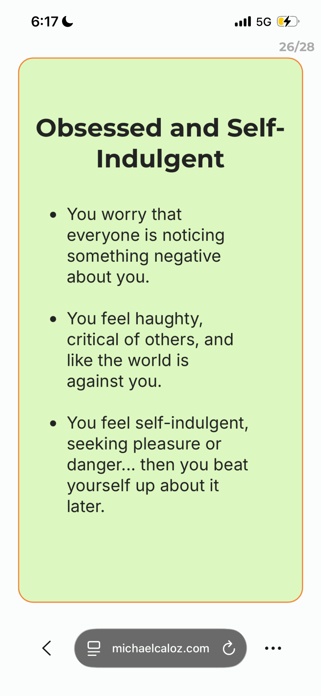

06/28/2026
UGHH IM TWEAKING. I hate summer. SUMMER IS TH WORSY!!!! I FEEL SO ANOYING. MREEEOWWWW

U know wha. Im gonna unelash. it . Im gonna be annoying. Unleash the prideful self obsessed demon i am.
I dont even KNOW WHY I AM!!! LIke moments liek these its me regualrly then just. The urge. Instinct. I will no longer analuze it today. AN di waill let that bih run thru my nbody. And also my doary is online yes. BUt i am just oeprating under the guise of. THis is my twitter. BUt this time it is optional to read.
So Yes. I am gong to overshare. Bc my dopamine ist elling me to. I am traumatized by Raya Binobo telling me in Decemebr though lovingly that she was worried about my sudden oversharing. Its like legitimiately this lexapro but qwhen i think about it the alternative is death so. Sigh. UNGHHHHHHHH!!!!!!!!!!!!!!!!!! Also Raya incase u read this agian Yes. I knew it was U checking my website. IM crazy. ANd i need a job in cybersecurtiy.
Ok u know wha. I will eplxain a little. Before the lexapro most o fmy energy was going to . Manging the depression. Like deadass. Like seeing these aspects of myself. Liek i was able to udnerstand and accept them because a) i did not have enough energy to purseu it. So its like meow. Tehse aspects are familiar and udnerstood. But now i have enough energy to purseu them. ANd i thought that understadning them would be enough to liek. Idk. Just. Redirect it/Not do it or wwatever. But. No. Sigh.
I'm learning to lose that's the thing they don't... Teach... u
Ok talking about real things. I. I just want money bruh. Like. NOTHIGN IS RETURNING ME MONEY!!!! THis music is not. THose videos di not. Joseph is not. I dont have any game yet comeplted to ship. And. I'm stillw aiting on. Im gonna fucking overshare. Imw aiting for UBC to return their verdict on my .. Appeal.
ALso. Firs toff. This aligns with sexual self preservation instinct. But. I defintiely. have obsessive stalkerish tendencies. Howver liek i always like udnerstood it as just lik them crazy instincts and laways suppressed it even by mysefl until the lexapro. ANd im kind of just realiznig that. Perhaps suprpessing all this like energy. Is wat led to my derpesion. ALso i got bulied a lot for being like energetic. I used to ahve a youtueb channel called atadbit and then i showed it tlike one friend i think adn then he showed it to like other people and then during grade 7 this guy a hyear abvoe just kept calling me Atadbit eveyrtime he saw me... My life is so terribel and sad. Passion is demeaned. IM like. Lady gaga. So whatever. I know its like weird but the thing is ive already been able to be not weird until the facade like fails after like 5 months. Especialtl yhwen i get drunk. God. SIgh. Its. like. I knwo how to think and do like anormal person. But i just. DOnt want to bruh. Idk. Maybe thisll get better with time.